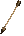

Monster 64, base projectile frame 224 (Crystal direction 0). Each direction uses stride 1.
Measured from frame 224 pixels: the arrow tail sits at the lib anchor (offsetX=12, offsetY=1) and the tip points down (~97 deg), not up. The game previously used baseAngleDeg=-90 which is ~180 deg wrong.
